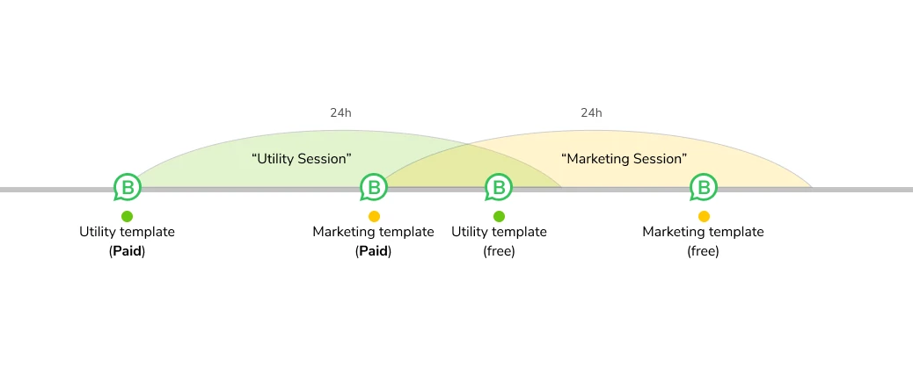
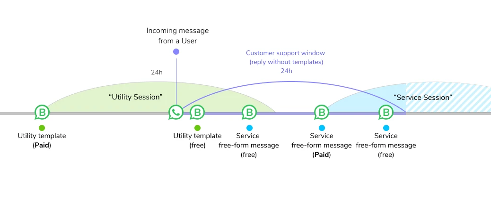
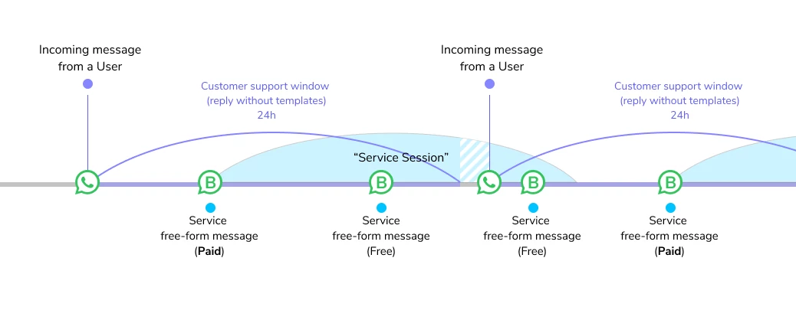

WhatsApp Conversation-Based Pricing
We're making changes to WhatsApp pricing. Starting February 1, 2024, we're moving from notification-based pricing to conversation-based pricing.
What is a conversation?
A conversation is a 24-hour session of messaging between a business and a customer. It can be:
- Started when a business sends a message to a customer who hasn't messaged the business in more than 24 hours.
- Started when a customer messages a business.
- All messages exchanged between the business and customer within the next 24 hours.
Conversation types
There are two types of conversations:
- User-initiated: Started when a user messages a business
- Business-initiated: Started when a business messages a user who hasn't messaged the business in more than 24 hours
Pricing
Conversation prices vary based on the country code of the recipient's phone number. Conversations are categorized as:
- Marketing
- Utility
- Authentication
- Service
Free entry point messages
Businesses can send free "entry point" messages in response to user-initiated conversations.
Best practices
- Respond quickly
- Use entry point messages
- Categorize conversations
Conversation pricing FAQs
What's changing with WhatsApp pricing?
We're moving from notification-based pricing to conversation-based pricing. This new model is designed to be more intuitive and better aligned with how businesses and customers use WhatsApp.
When does conversation-based pricing start?
Conversation-based pricing begins on February 1, 2024.
Explore conversation-based pricing by country
How conversations are measured
Conversation examples
 Back to Calculator
Back to Calculator